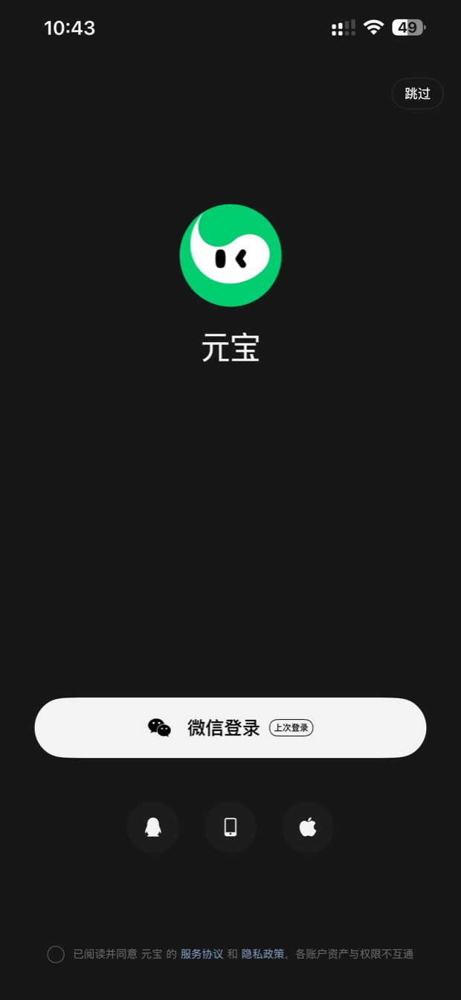
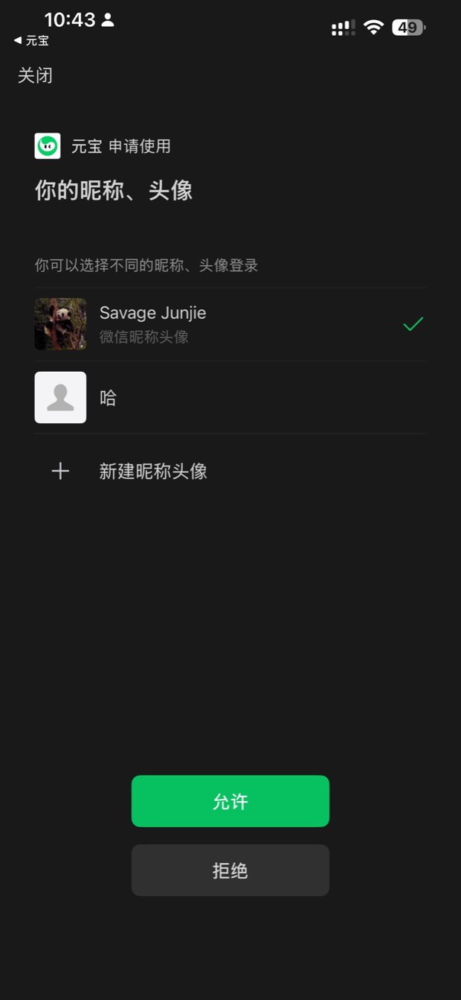
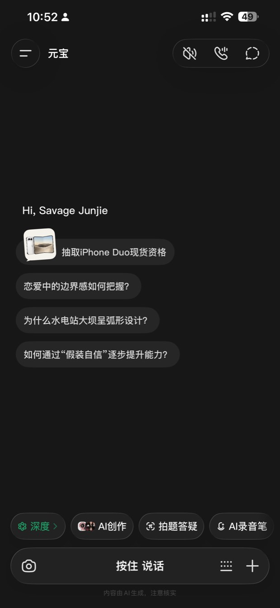
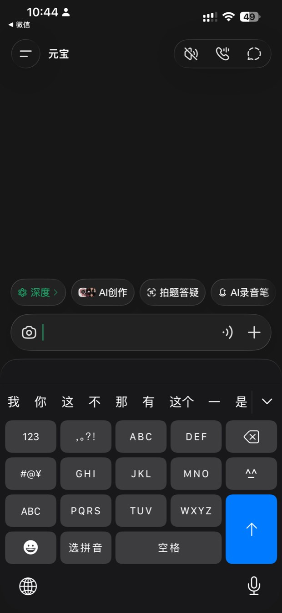

这是全套里最省事的一个 AI。因为登录它，只需要您手机上早就有的那样东西——微信。
为什么单独推荐它？别的 AI 要注册账号、要设密码、要收短信验证码。这三步就能把一半的人挡在门外。
元宝不用。点「微信登录」，点「允许」，进去了。没有新密码要记，因为根本没有新账号——它就是认您的微信。
苹果手机打开「App Store」，安卓手机打开「应用商店」，在搜索框里打两个字：元宝。
认准那个绿色圆球、上面有两只眼睛的图标，开发者是「腾讯」。装好之后，图标会出现在手机桌面上。

点图可以放大看
屏幕上字很少，不用找。整个页面就这一个白按钮，就在最下面。按钮左边有个微信的小图标，看到它就对了。

点图可以放大看
这一步最容易让人犯嘀咕，所以说清楚：它在申请的是您的微信昵称和头像，也就是让您报个名字，它好称呼您。

点图可以放大看
屏幕上出现「Hi，」加一串名字，那串名字就是您的微信名。看到它，说明已经进去了，不用再证明什么。
如果名字不是您想要的，可以在微信里改名，这里会跟着变。不用在这儿折腾。
点图可以放大看
不用打字。手指按住那个长条，像用对讲机一样，说完再松手。就跟在微信里发语音一样，您已经会了。
第一句可以问：「今天几号？天气热不热？」
屏幕上那些花花绿绿的东西，先都别管。
右上角三个小图标（静音、免提、更多）——不用管。
底下那排小按钮（深度、AI 创作、拍题答疑、AI 录音笔）——不用管，那是给年轻人和学生用的。
您只需要记住两个位置：最下面按住说话，和左上角那三道横线（点开是以前聊过的话）。就这两个。

点图可以放大看
按住说话那个长条的左边，有个照相机图标；右边的两个小图标里，左边那个是键盘。
点键盘，就能像发微信一样打字。打字慢没关系，它会等着您。
三条底线，比会用它更重要。
一、它会说错。它答得又快又像样，但可能是编的。拿不准的，再问一遍，或者问人。
二、病、钱、法律，问真人。吃药的事问医生，钱的事问银行，签字的事问律师。它不能替您担这个责任。
三、凡是要您转账、报密码、念验证码的，一律不信。不管屏幕上说的是谁——就算长得像您儿子、声音像您孙子，也先挂了电话打回去问一句。
为什么这个法子对老人特别管用：它不是又教了一个新东西，而是接在您已经会的事情上。微信您天天用，按住说话您天天用，元宝只是把这两样凑在了一起。学新东西最难的是第一步，而这一步，您早就跨过去了。
文中四张截图，是在真机上实际操作时截下来的。界面可能随版本略有变化，位置大体不变。